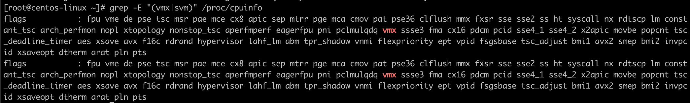
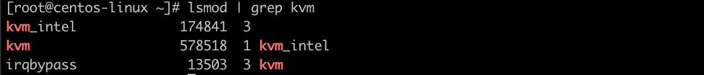
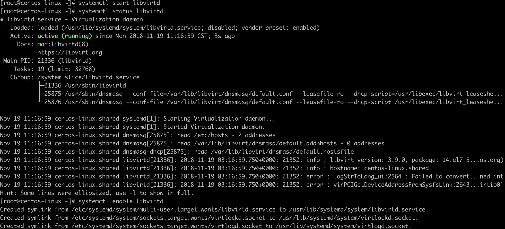
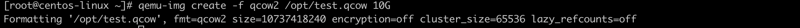
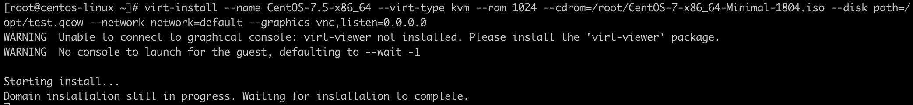
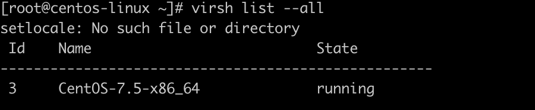
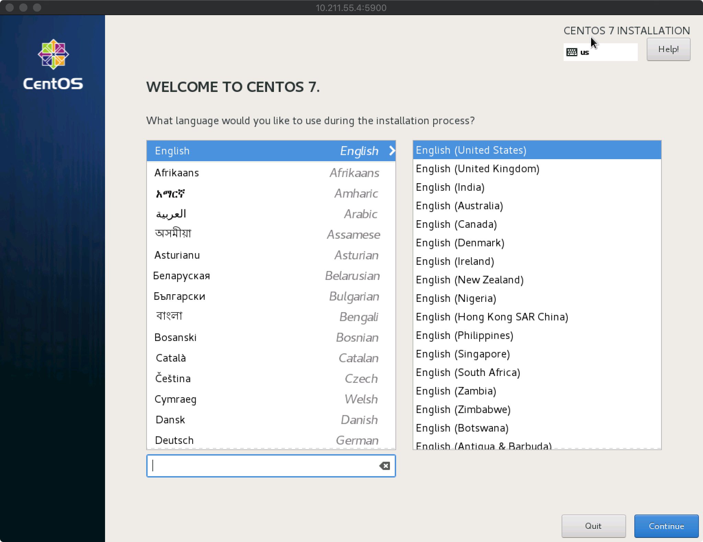
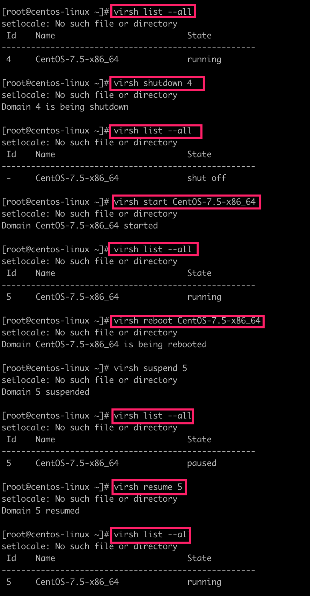
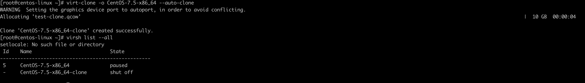

简介
KVM 是目前硬件虚拟化中应用较为广泛的技术。在本文中将介绍KVM 环境搭建，KVM 虚拟机操作以及利用libvirt进行Java编程等。
操作系统：CentOS 7(1804)
CPU: 2
内存：2G
ISO镜像: http://isoredirect.centos.org/centos/7/isos/x86_64/CentOS-7-x86_64-Minimal-1804.iso
KVM 环境搭建
KVM 环境搭建可以分为四步。
第一步：查看CPU是否支持虚拟化
KVM硬件虚拟化技术是全虚拟化，需要硬件的支持。因此在搭建KVM环境之前需要先确认CPU是否支持虚拟化。
命令：grep -E "(vmx|svm)" /proc/cpuinfo
结果：

说明：
- /proc : proc文件系统，一种伪文件系统，存储的是当前内核运行状态的一系列特殊文件。用户可以通过这些文件查看有关系统硬件及当前正在运行进程的信息，甚至可以通过更改其中某些文件来改变内核的运行状态。
- /proc/cpuinfo： CPU相关信息。
- vmx: Intel 虚拟化技术
- svm: AMD 虚拟化技术
第二步：安装KVM相关组件
命令：yum -y install qemu-kvm qemu-kvm-tools virt-manager virt-install libvirt
说明：
- qemu-kvm: 用户态管理KVM，网卡、声卡、PCI设备等的管理.
- qemu-kvm-tools: KVM调试和诊断工具
- virt-manager: 可选。通过libvirt管理虚拟机的桌面工具。
- virt-install: 安装虚拟机的工具。
- libvirt: 一种实现Linux 虚拟化功能的Linux API，它支持各种Hypervisor，包括Xen 和KVM，以及QEMU 和用于其他操作系统的一些虚拟产品。
第三步：查看KVM是否加载成功
命令：lsmod | grep kvm
结果：

说明：
- lsmod: 用于显示已经加载到内核中的模块的状态信息。
第四步：启动libvirtd
命令：systemctl start libvirtdsystemctl staus libvirtdsystemctl enable libvirtd
结果：

说明：
- systemctl: 一个systemd工具，主要负责控制systemd系统和服务管理器
虚拟机操作
创建虚拟机
第一步：创建磁盘
命令：qemu-img create -f qcow2 /opt/test.qcow 10G
结果：

说明：
- qemu-img: 是QEMU的磁盘管理工具。
- qemu-img create [-f fmt][-o options] filename [size] :
- -f 指定磁盘格式，
- -o 其他可选项，
- filename 磁盘文件名称
- size 磁盘大小
第二步：创建虚拟机
命令：virt-install --name CentOS-7.5-x86_64 --virt-type kvm --ram 1024 --cdrom=/root/CentOS-7-x86_64-Minimal-1804.iso --disk path=/opt/test.qcow --network network=default --graphics vnc,listen=0.0.0.0
结果：

说明：
- –name: 虚拟机名称
- –virt-type 虚拟类型
- –ram 内存
- –cdrom 系统安装镜像
- –disk 系统磁盘
- –network 网络相关配置
- –graphics 配置客户机图形化
第三步：查看虚拟机状态(可选)
命令：virsh list --all
结果：

第四步：远程虚拟机(可选)

说明：
通过VNC客户端连接宿主机的IP和端口访问虚拟机。
虚拟机相关操作
常见命令：
| 命令 | 解释 |
|---|---|
| virsh list [–all] | 查看虚拟机和状态。不加 –all 只显示活动的虚拟机。 |
| virsh start [Name] | 启动名称为Name虚拟机。 |
| virsh reboot [Id/Name] | 根据虚拟机的id或者name重启虚拟机。 |
| virsh suspend [Id/Name] | 根据虚拟机的id或者name挂起虚拟机。 |
| virsh resume [Id/Name] | 根据虚拟机的id或者name把虚拟机唤醒，使其恢复到running状态 |
| virsh shutdown [Id/Name] | 根据虚拟机的id或者name关闭虚拟机 |
| virsh destroy [Id/Name] | 强制关闭该虚拟机。 |
| virsh undefine [Id/Name] | 根据虚拟机的id或者name移除虚拟机 |
示例：

克隆虚拟机
命令：
virt-clone -o CentOS-7.5-x86_64 --auto-clone
结果：
